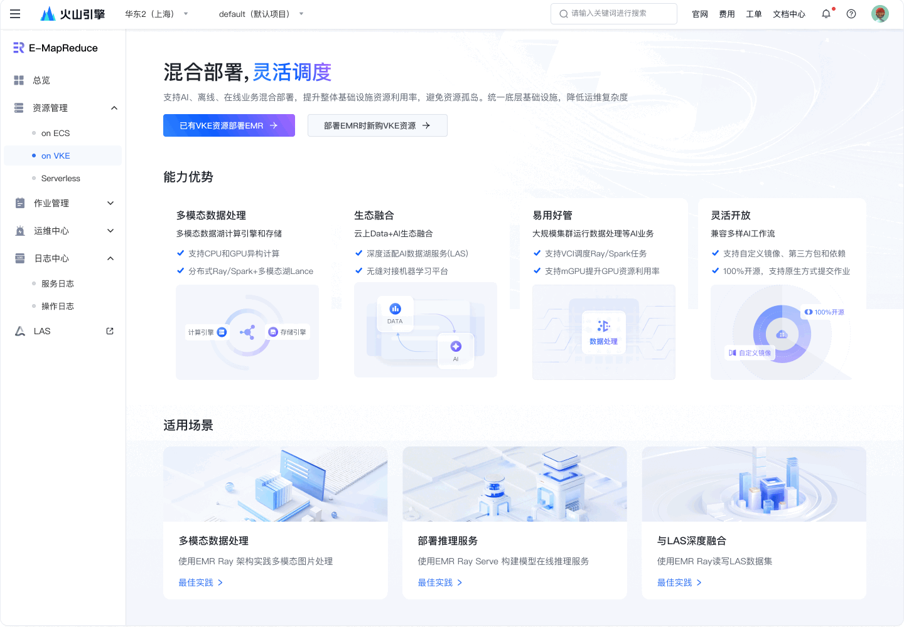

SELF-SERVICE ONBOARDING
EMR·AI 客户自助开通引导优化
商业机会能否转化为真实使用，取决于用户能否理解产品、做出配置决策并顺利开始工作。这个项目把 AI 客户的上手障碍，拆解为资源开通前、中、后的连续体验。

- 项目方向
- 商业化
- 我的参与
- 桌面调研、工单与产研反馈分析、场景与问题定义、开通链路及界面设计
项目背景
随着大模型发展，有大批AI类客户出现，直接拉动算力需求，为EMR带来显著商机
大模型公司需要高质量的数据做模型训练，对非结构化数据做预处理，需要大量的算力和GPU资源，对集群的计算调度与存储能力构成了极大的挑战
而EMR提供开源增强的Spark和Ray引擎，通过弹性伸缩、作业管理等高级功能，大幅降低客户维护成本和资源成本，提升用户数据预处理效率。
为什么聚焦VKE与Serverless？
EMR 有三种资源托管形态，为什么这次优化只涉及到 VKE 与 Serverless 呢？以租一个办公楼为例：